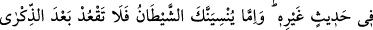
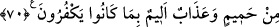

ZALİMLERDEN UZAK DURMAK
68. Âyetlerimiz hakkında ileri geri konuşmaya dalanları gördüğünde, onlar başka
bir söze geçinceye kadar onlardan uzak dur. Eğer şeytan sana unutturursa,
hatırladıktan sonra artık o zalimler topluluğu ile oturma.
69. Takvâ sahiplerine, inanmayanların hesabından herhangi bir sorumluluk yoktur.
Fakat belki korunurlar diye hatırlatmak gerekir.
70. Dinlerini bir oyuncak ve bir eğlence edinen ve dünya hayatının aldattığı
kimseleri (bir tarafa) bırak! Kazandıkları sebebiyle hiçbir nefsin felâkete dûçar
olmaması için Kur’an ile nasihat et. O nefis için Allah’tan başka ne dost vardır, ne
de şefaatçı. O, bütün varını fidye olarak verse, yine de ondan kabul edilmez. Onlar
kazandıkları (günahlar) yüzünden helâke sürüklenmiş kimselerdir. İnkâr
ettiklerinden dolayı onlar için kaynar sudan ibaret bir içecek ve elem verici bir
azap vardır.
“Âyetlerimiz hakkında (münâsebetsizliğe) dalanları gördüğün zaman” Buradaki
hitab, Nebi (a.s.)’a ve ümmetinedir.
“
” lugatte bir şeye mutlak olarak başlamaktır. Ancak daha çok bu kelime bâtıl
bir şeye başlamayı ifade etmek üzere kullanılır. “Âyetler”den maksad ise Kur’an’dır.
Kureyşli kâfirlerin âdetleri olduğu üzere Kur’an’ı yalanlamaya, onunla alay etmeye ve
saldırmaya başladıklarını gördüğün zaman âyetler hakkında münâsebetsizliğe
başladıklarında onlarla oturmayı terkederek ve yanlarından kalkarak “onlar başka bir
söze geçinceye kadar onlardan yüz çevir.” Âyetlerimizden başka bir konuyu
konuşmaya başlayana kadar yüz çevirmeye devam et.
“Eğer şeytan sana” onlarla oturmayı terk etmekle emrolunduğunu “unutturursa
hatırladıktan sonra artık zalimler topluluğuyla beraber bulunma.” Çünkü onlar,
yalanlamayı ve alay etmeyi tasdik ve tazim yerine koymuşlardır.